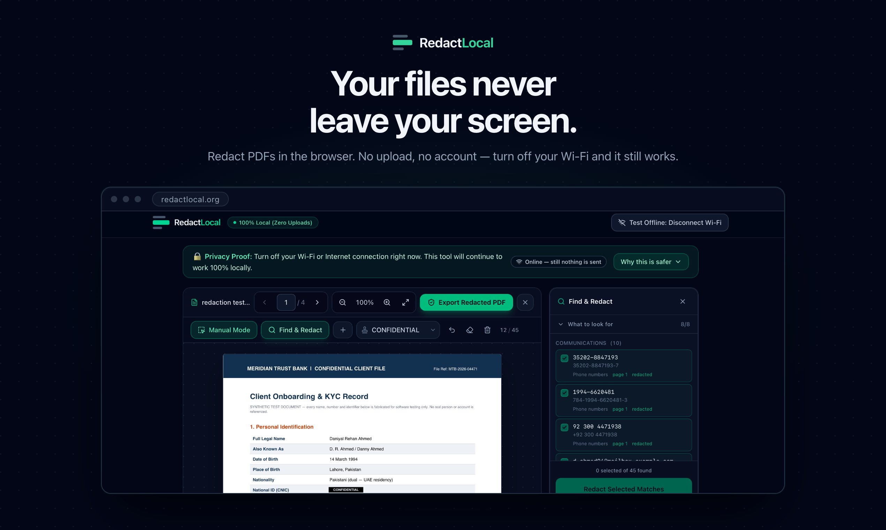

The Black Box Flaw: Why Your Redacted PDFs Are Still Leaking
And how client-side PDF redaction closes the hole for good.

A partner asks you to redact a settlement agreement before it goes to opposing counsel. You open a PDF editor, drag black rectangles over the account numbers and the claimant's address, save, and send.
The document looks redacted. It is not redacted.
Anyone who receives that file can select the text underneath your black rectangle, copy it, and paste it into a text editor. The account number is still there. So is the address. The black box you drew is a graphic sitting on top of a text layer that was never touched.
This is not a hypothetical. It is the single most common way privileged material leaks, and it has happened in court filings, government document releases, and merger disclosures — repeatedly, publicly, and always by the same mechanism.
There are two separate failures at work in most redaction workflows. Both are fixable. Neither is fixed by the tool you are probably using right now.
Failure One: A Black Box Is Not a Redaction
What "drawing a box" actually does to a PDF
A PDF is not a picture of a page. It is a set of instructions for drawing a page — a content stream that says, in effect, "set this font, move to these coordinates, show this string of characters."
When you draw a black rectangle in a standard PDF editor, you add one more instruction to that stream: fill this area with black. The instruction is appended, so it paints over the earlier ones.
But the text-showing operator is still in the file. The font used to render it is still embedded. The character codes are still sitting in the content stream, in reading order, at known coordinates.
You did not remove anything. You drew a curtain in front of it.
How the text comes back
Recovering it requires no expertise and no special software:
- Select and copy. Drag across the black box in any PDF reader. The text highlights beneath it. Paste it anywhere.
- Command-line extraction.
pdftotext redacted.pdf -dumps every character in the document to your terminal, black boxes irrelevant. - Metadata and object inspection. Document properties, annotation objects, and revision history routinely retain earlier states of the file.
- Converting the file. Send that PDF through almost any converter and the "hidden" text reappears as ordinary body copy.
The person who receives your document does not need to be an adversary or a technician. A paralegal running a routine text search can surface material that was supposed to be withheld.
The test that matters: run pdftotext on any PDF you have redacted in the last year. If the redacted content appears in the output, that document leaked the moment you sent it.
Failure Two: You Uploaded Privileged Material to Someone Else's Server
Search for a redaction tool and you will find dozens of free web apps. Nearly all of them begin the same way: "Upload your file."
Consider what that sentence actually asks of you. You are transmitting attorney-client privileged material, PHI, or personally identifiable financial data to infrastructure you cannot inspect, in a jurisdiction you may not know, under a retention policy you did not read.
What "processed securely" usually means
The marketing copy on these services tends to say "files are deleted after one hour" or "processed securely." Read that carefully. It is a promise about behaviour, not a property of the architecture. It concedes the file was stored in the first place.
Between upload and deletion, your document has plausibly touched:
- Web server request logs
- A temporary processing directory on disk
- Automated infrastructure backups and snapshots
- A CDN or load balancer cache
- Whatever observability tooling the vendor runs
None of that is malicious. It is what ordinary server architecture does. The problem is that you now have a disclosure event you cannot describe, on systems you cannot audit.
The compliance problem this creates
For regulated professionals, the exposure is not merely technical:
| Concern | The question you cannot answer |
|---|---|
| Attorney-client privilege | Did transmitting this to a third-party processor waive it? |
| GDPR / data protection | Who is the processor? Where is the DPA? Was this a cross-border transfer? |
| Client engagement terms | Does your retainer permit sending client material to unvetted vendors? |
| Incident response | If that vendor is breached next year, is your document in the blast radius? |
The cleanest way to answer every one of those questions is to make the upload never happen.
The Only Redaction That Works: Rasterization
If masking fails because the text survives underneath, the fix is straightforward in principle: destroy the text rather than cover it.
That is what rasterization does.
Masking vs. rasterization
Masking adds a drawing instruction on top of the existing content stream. Text objects, fonts, and coordinates all survive intact. The information is hidden but present.
Rasterization converts each page into a flat image — a grid of pixels — then builds a new PDF from those images alone. The black rectangle is burned into the pixel data before the new file is written.
There is no text layer in the output because there is no text. There are no fonts to reconstruct characters from. There is nothing beneath the black area except black pixels, because the black area is pixels.
Copy-paste returns nothing. pdftotext returns an empty file. Not because the text is protected — because it does not exist.
What you give up, and why it is correct
Rasterization is not free. A flattened PDF is no longer searchable, its file size is usually larger, and the text cannot be reflowed.
For a document being produced under a protective order, filed publicly, or handed to opposing counsel, that is exactly the right trade. You are not optimising for convenience. You are producing a document whose withheld content is unrecoverable by anyone, forever, using any tool.
Keep your searchable original. Produce the flattened copy.
Server-Side vs. Client-Side: Where the Work Happens
Rasterization solves the recovery problem. It does nothing about the upload problem — a cloud tool can rasterize your file perfectly well after receiving it.
This is where client-side PDF redaction matters.
Modern browsers are capable computing environments. They can parse a PDF, render pages to a canvas, manipulate pixels, and assemble a new file — all in local memory, using JavaScript and WebAssembly your machine already downloaded.
Nothing about redaction inherently requires a server. When a web-based redaction tool uploads your file, that is an architectural choice made for the vendor's convenience, not a technical necessity.
Browser-native PDF redaction inverts the trust model. Instead of asking you to trust a privacy policy, it removes the party you would have had to trust.
How RedactLocal Works
RedactLocal is an offline PDF redactor web app built on exactly this principle. Here is the mechanism, without marketing language.
Your document never reaches a server
When you open a PDF in RedactLocal, the browser's own FileReader API reads it into the tab's memory. It is parsed by pdf.js in a Web Worker. It is rendered to a canvas element. It is exported by your browser's download mechanism.
At no point in that chain is there an endpoint the document is sent to. There is no upload API, because there is no backend that accepts files.
The test: open RedactLocal, disconnect your Wi-Fi, and redact a document. It works. Export the file — it still works. A cloud tool cannot survive that test, and that is the entire difference.
Permanent rasterization, burned into pixels
On export, every page is rendered to a canvas at 2× the PDF's native resolution — roughly 144 DPI, which stays legible in print without producing an unmanageable file. Your redaction rectangles are filled onto those pixels. The resulting images become the new PDF.
The source document's text objects, embedded fonts, vector paths, and metadata have no path into the output. They are not carried over and suppressed. They are simply never written.
The rendering density adapts to your hardware — from roughly 16.7 megapixels of canvas on a desktop down to 3 megapixels on a low-memory phone — so a 200-page production does not crash the tab on a laptop.
Every export inspects its own work
This is the part most redaction tools do not do at all.
Before the download button appears, RedactLocal re-opens the PDF it just generated and inspects it as an adversary would:
- Extractable characters via text extraction
- Text-showing operators in the page content streams
- Font objects in the document
- Annotation objects
It then reports what it found:
Re-opened and checked: 12 flattened pages, 0 selectable characters, 0 text operators, 0 font objects, 0 annotations.
You are not asked to trust that the redaction worked. You are shown the result of the check. And if a particular inspection cannot run in your browser, it says so by name rather than quietly reporting a zero — because "verified clean" and "could not verify" are different claims, and collapsing them would be the exact dishonesty this tool exists to eliminate.
What we are transparent about
Two things you should know before trusting any claim in this article:
The site loads privacy-friendly page analytics. Loading redactlocal.org fires a page-view beacon, the same as most websites. It records that a page was viewed. It has no access to your document, which never leaves your tab's memory. We tell you this because you will find it in your Network tab in ten seconds, and a security tool that hides a detail like that has told you something about how it handles the details you cannot see.
Pattern scanning does not read scanned documents. The scanner works on a PDF's text layer. If your file is an image-only scan, there is no text to match against — RedactLocal reports those pages by number and tells you to check them by eye rather than passing them as clean. Manual redaction and rasterized export work normally on scanned pages.
How to Redact a PDF Without Uploading It
- Open redactlocal.org. No account, no installation, no extension.
- Disconnect from the internet. Optional, but do it once — it is the only proof that matters.
- Drop in your PDF. It is read into your browser's memory by your browser.
- Mark what has to go. Drag boxes manually, or scan for structured identifiers and confirm each match.
- Export. Pages are rasterized, redactions burned into pixels, and a new PDF assembled from images.
- Read the verification report before you download.
- Verify independently. Run
pdftotexton the file you just saved. It should return nothing.
Try It Before You Trust It
Every other redaction tool asks for your trust first and your file second. RedactLocal asks for neither. There is no account to create, nothing to install, and no server that receives your document.
Open the tool, turn off your Wi-Fi, and redact something. That is the whole pitch, and you can falsify it in ten seconds.
Open RedactLocal Workspace